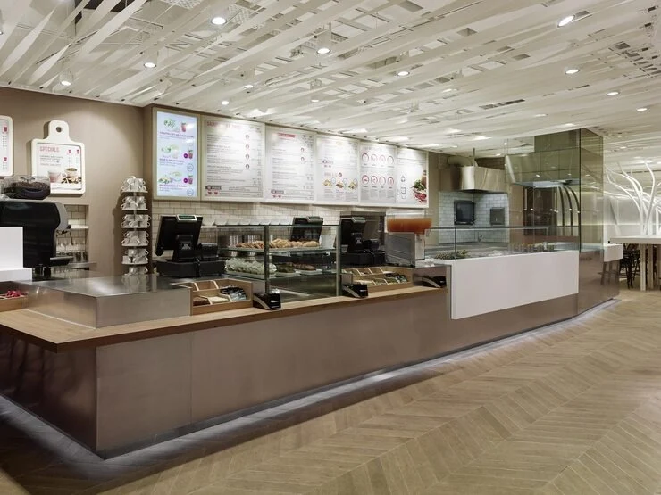
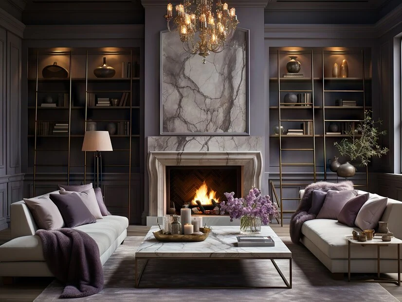
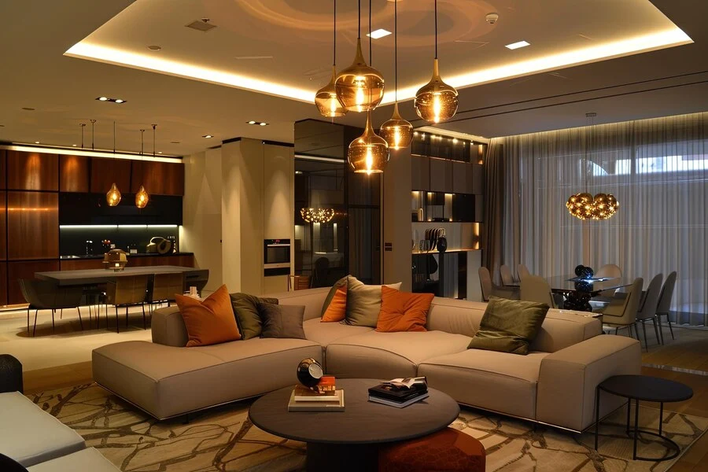
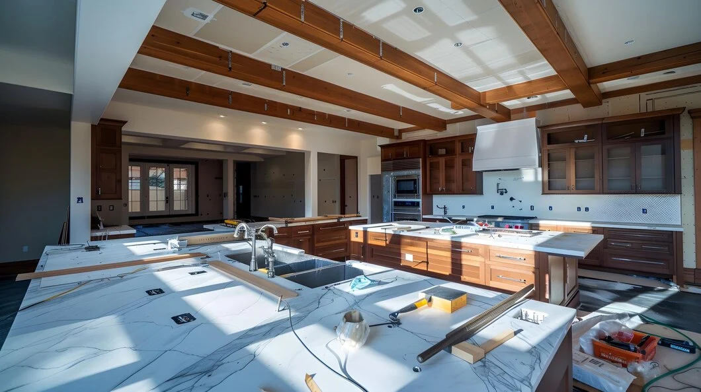

THE JOURNAL / PLANNING / 05
Renovating while the family still lives at home
Be clear about occupancy from the start
Tell the team if the family will remain in the property during the work. This changes the planning conversation. Explain which rooms must remain usable, whether anyone works or studies at home and whether there are pets or visitors to consider. The project team should assess the sequence and relevant precautions for the actual scope. Staying in the home should not be assumed workable for every type of renovation.
Identify the activities that cannot be interrupted easily. These may include access to a functioning bathroom, cooking arrangements or a quiet place for a scheduled call. Ask how the proposal deals with these needs. If a period away from the property is necessary, understand that early enough to plan it. Do not rely on a general statement that there will be “no disturbance”.
Understand what must happen first
Ask for a sequence that explains preparation, removal, repairs, service work, installation and finishing as relevant to the project. The exact order depends on the work and should be assessed by the people responsible. A visible list makes dependencies easier to discuss. For example, a decorative finish should not hide an unresolved underlying problem that needs separate attention.
Keep a record of conditions noticed before work begins. Photographs can help explain the starting position, provided private items are removed from view. Discuss how newly discovered issues will be reported and who can approve changes. Renovation often involves information that becomes clearer after access is available. A written process is more useful than pretending there will never be an unexpected finding.
Agree access and communication
Decide who coordinates entry to the property and who answers day-to-day questions. If a building association controls access hours, lift use or material movement, give the relevant information to the team. The business should confirm practical arrangements before committing to a schedule that depends on them. Neighbours and shared areas may also be affected, so the responsibilities need to be clear.
Choose one main communication record for decisions. A family can discuss preferences in several chats, but approved changes should reach the designated project contact in one clear form. Record the item, the decision and any agreed cost or date effect. This reduces the chance that different people give conflicting directions to workers at the site.
Plan belongings and temporary arrangements
Agree which items will be moved, who moves them and where they will be kept. Remove valuables and private documents from work areas before access is given. Ask the project team to explain the protection and housekeeping arrangements included in its scope. Do not assume that storage, packing or shifting services form part of the quotation unless they are stated.
Think about the practical effect of the sequence on daily life. Food preparation, laundry and internet access may need temporary arrangements depending on the work. Discuss expected interruptions with the responsible trades. A household plan is useful even when the technical schedule is handled by professionals, because it helps the family avoid making commitments that conflict with the work.
Review progress against agreed decisions
Use scheduled updates to check completed work, upcoming activities and decisions required from you. Ask questions before an unclear point becomes a finished installation. Keep the handover list separate from new requests so that both sides can distinguish incomplete agreed work from additional work. The goal is a clear record and a manageable household routine throughout the renovation.
Suggested article action: Tell GS INTERIOR STUDIO whether your property is occupied and which daily activities must remain possible during the proposed work.
10 visual references
Recovered images from gsinteriorstudio.com. Used as inspiration; images repeat across articles and are not presented as verified project case studies.







